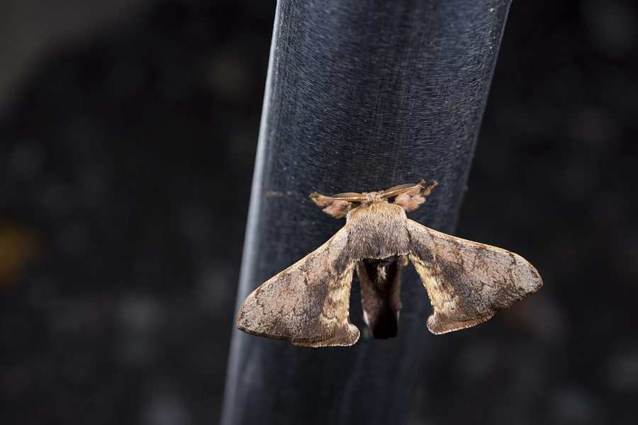

ग्रीनिश सिल्क-मॉथGreenish Silk-Moth
Trilocha varians · Bombycidae · INS-0316

- Scientific name वैज्ञानिक नाम
- Trilocha varians Walker, 1855
- Family कुल
- Bombycidae
- Hindi हिंदी
- ग्रीनिश सिल्क-मॉथ
- Local names स्थानीय नाम
- greenish silk-moth, greenish silk moth
- Status here यहाँ की स्थिति
- native
- Movement आवागमन
- Resident, here all year
- Known from कहाँ दर्ज
- Others have published records from the wider Awadh–Purvanchal plain, none yet from Basti–Ayodhya अवध–पूर्वांचल से दूसरों के प्रकाशित अभिलेख, बस्ती–अयोध्या से अभी नहीं
- IUCN IUCN
- not evaluated
- Review समीक्षा
- not yet reviewed
When to look कब देखें
Present all year. साल भर मौजूद।
ग्रीनिश सिल्क-मॉथ / Greenish Silk-Moth
Trilocha varians Walker, 1855 — Bombycidae
ग्रीनिश सिल्क-मॉथ — यह हल्के या गहरे लाल-भूरे अथवा धूसर रंग का एक छोटा पतंगा है। इसके अगले पंखों पर लहरदार रेखाएँ और बाहरी किनारे के पास एक गहरा धब्बा होता है। इसकी इल्ली लंबी और भूरी होती है जिसके पिछले सिरे पर एक लंबा पतला सींग जैसा उभार होता है।
Quick Identification त्वरित पहचान
| Feature | Description |
|---|---|
| Wingspan | Male 26 mm, female 32 mm (Hampson 1892, p. 35) |
| Body | Head, thorax, and abdomen pale or dark red-brown; vertex of head and collar sometimes whitish (Hampson 1892, p. 35) |
| Forewing | Pale reddish brown or greyish; two antemedial curved waved lines; pale streak on discocellulars surrounded by a dark patch; two postmedial curved and waved lines somewhat far apart; darker patch on outer margin below apex; costal edge pale; cilia dark red-brown (Hampson 1892, p. 35) |
| Hindwing | Pale or dark red-brown, or greyish with outer area red-brown; indistinct postmedial line; inner area pale with some dark red strigae crossing it (Hampson 1892, p. 35) |
| Colour forms | Grey form albicollis; redder form varians in which the markings are often almost obsolete (Hampson 1892, p. 35) |
Field tip: Look for a small pale or dark red-brown (or greyish) bombycid moth with a darker patch on the outer margin below the forewing apex and a pale discocellular streak in a dark patch (Hampson 1892, p. 35).
हिंदी: इसके नर के पंखों का फैलाव 26 मिमी और मादा का 32 मिमी होता है। लाल-भूरे या धूसर पंखों पर लहरदार रेखाएँ और अगले पंख के बाहरी किनारे पर गहरा धब्बा इसकी पहचान है।
Morphology आकारिकी
Biometrics:
| Measurement | Range | Source |
|---|---|---|
| Expanse (male) | 26 mm | Hampson (1892, p. 35) |
| Expanse (female) | 32 mm | Hampson (1892, p. 35) |
Hampson (1892, p. 35) describes the adult: "Head, thorax, and abdomen pale or dark red-brown ; the vertex of head and collar sometimes whitish. Fore wing pale reddish brown or greyish ; two antemedial curved waved lines ; a pale streak on the discocellulars surrounded by a dark patch ; two postmedial curved and waved lines somewhat far apart ; a darker patch on the outer margin below the apex ; the costal edge pale ; cilia dark red-brown. Hind wing pale or dark red-brown, or greyish with the outer area red-brown ; a postmedial indistinct line ; inner area pale, with some dark red strigae crossing it. The grey form is albicollis ; in the redder form varians the markings are often almost obsolete."
Larval Stage
Hampson (1892, p. 35) describes the larva and cocoon: "Larva elongate and brown, with darker dots and a lateral row of black dots ; a slight dorsal protuberance on each of the thoracic, and on the 5th and 8th somites ; a long slender horn on anal somite. Cocoon silken, slight in texture ; oval and pale."
हिंदी: हैंपसन (1892) के अनुसार इसका धूसर रूप albicollis और लालिमा लिए रूप varians कहलाता है। इसकी इल्ली लंबी और भूरी होती है जिस पर काले बिंदुओं की कतार और अंतिम खंड पर लंबा पतला सींग होता है। इसका कोया रेशमी, हल्का, अंडाकार और फीके रंग का होता है।
Behaviour & Ecology व्यवहार और पारिस्थितिकी
Not available in consulted sources.
हिंदी: इसके व्यवहार और पारिस्थितिकी का विस्तृत विवरण देखे गए स्रोतों में उपलब्ध नहीं है।
Life Cycle / Phenology जीवन चक्र
Not available in consulted sources.
हिंदी: इसके जीवन चक्र और मौसमी गतिविधि का विवरण देखे गए स्रोतों में उपलब्ध नहीं है।
Host Plants or Prey आहार
Not available in consulted sources.
हिंदी: इसके भोजन-पौधों का विवरण देखे गए स्रोतों में उपलब्ध नहीं है।
Predators / Natural Enemies शत्रु
Not available in consulted sources.
हिंदी: इसके प्राकृतिक शत्रुओं का विवरण देखे गए स्रोतों में उपलब्ध नहीं है।
Agricultural / Human Relevance कृषि प्रासंगिकता
Not available in consulted sources.
हिंदी: इसके कृषि या मानव महत्व का विवरण देखे गए स्रोतों में उपलब्ध नहीं है।
Expected Locally स्थानीय रूप से अपेक्षित
Not a field record. Written from published accounts for eastern Uttar Pradesh. No confirmed local sighting yet — if you have seen it, that is what the atlas needs.
अभी तक स्थानीय पुष्टि नहीं। यह विवरण प्रकाशित स्रोतों से है, किसी अवलोकन से नहीं।
Hampson (1892, p. 35) gives its range as throughout India. GBIF holds published records from the wider Awadh–Purvanchal plain, none yet from Basti–Ayodhya: two photographed records by two observers, one from Pratapgarh on 5 November 2015 and one from Lucknow on 14 July 2026. A first local record would be a clear photograph showing the small red-brown or greyish wings, the darker subapical patch on the outer margin, and the hindwing inner-area strigae with place and date, sent through the About page.
हिंदी: हैंपसन (1892) ने इसे पूरे भारत में दर्ज किया है। जीबीआइएफ (GBIF) में प्रतापगढ़ और लखनऊ से दो अभिलेख हैं, पर बस्ती या अयोध्या से अभी कोई अभिलेख नहीं है।
Distribution वितरण
Global range: Hampson (1892, p. 35) gives: "Philippines ; China ; Formosa ; throughout India and Ceylon ; Borneo."
In India: Throughout India (Hampson 1892, p. 35).
In Uttar Pradesh: GBIF holds two photographed records by two observers: Pratapgarh (5 November 2015) and Lucknow (14 July 2026).
In Basti district / eastern UP: GBIF holds no record from Basti or Ayodhya.
हिंदी: हैंपसन (1892) के अनुसार यह फिलीपींस, चीन, फॉर्मोसा, पूरे भारत, श्रीलंका और बोर्नियो में पाया जाता है। उत्तर प्रदेश में जीबीआइएफ पर प्रतापगढ़ और लखनऊ के दो अभिलेख हैं, पर बस्ती और अयोध्या से कोई अभिलेख नहीं है।
Research Questions शोध प्रश्न
Anyone can investigate these | कोई भी इन प्रश्नों की जाँच कर सकता है
- Does Trilocha varians occur in Basti and Ayodhya districts, given records in Pratapgarh and Lucknow? / क्या बस्ती और अयोध्या जिलों में ग्रीनिश सिल्क-मॉथ मिलता है?
- In which months are adults active in eastern Uttar Pradesh (given July and November records in nearby districts)? / पूर्वी उत्तर प्रदेश में यह पतंगा किन महीनों में सक्रिय रहता है?
- Do both the grey form (albicollis) and the redder form (varians) occur in Uttar Pradesh?
- Which local trees serve as larval food-plants for Trilocha varians in eastern Uttar Pradesh?
- Can a child spot the pale oval silken cocoons or the small red-brown moth resting near garden lights without disturbing it? (No equipment needed.)
हिंदी: कोई भी व्यक्ति बिना किसी उपकरण के रोशनी के पास बैठे इस छोटे लाल-भूरे या धूसर पतंगे और इसके अंडाकार कोये को देख सकता है।
Similar Species मिलती-जुलती प्रजातियाँ
| Species | How to tell apart | हिंदी |
|---|---|---|
| Trilocha varians (forms albicollis and varians) | The grey form albicollis is greyish with clearer waved lines; in the redder form varians the markings are often almost obsolete (Hampson 1892, p. 35). No look-alike in the atlas is compared in Hampson (1892, p. 35) | धूसर रूप (albicollis) में लहरदार रेखाएँ स्पष्ट होती हैं, जबकि लालिमा लिए रूप (varians) में निशान प्रायः धुंधले पड़ जाते हैं |
Field rule: A small bombycid moth (26 mm male, 32 mm female) that is pale or dark red-brown or greyish with two pairs of curved waved lines, a darker patch below the forewing apex on the outer margin, and dark red strigae on the pale inner area of the hindwing is Trilocha varians (Hampson 1892, p. 35).
हिंदी: छोटा लाल-भूरा या धूसर पतंगा जिसके अगले पंख के बाहरी किनारे पर गहरा धब्बा हो, ग्रीनिश सिल्क-मॉथ की पहचान है।
Taxonomy & Classification वर्गीकरण
Original description. Walker, F. (1855). List of the Specimens of Lepidopterous Insects in the Collection of the British Museum, part 5, p. 1153 (cited in Hampson 1892, p. 35 as Ocinara varians; GBIF lists Neprepa varians Walker, 1855 as a synonym).
Subspecies. Not available in consulted sources. Hampson (1892, p. 35) distinguishes the grey form albicollis and the redder form varians.
Family and order placement. Order Lepidoptera, family Bombycidae, genus Trilocha (GBIF); other atlas moths in order Lepidoptera include Eri Silkmoth (Samia ricini, Saturniidae) and Rosetta Hawkmoth (Hippotion rosetta, Sphingidae). Hampson (1892, p. 35, entry 38) placed it in Bombycidae under Ocinara.
Phylogenetic notes. Placed in Trilocha in modern classifications (GBIF), whereas Hampson (1892, p. 35) treated it as Ocinara varians.
IUCN status rationale. Not evaluated on the IUCN Red List.
हिंदी: इसका पहला वैज्ञानिक वर्णन वॉकर (1855) ने किया था। हैंपसन (1892) ने इसे Ocinara varians के रूप में Bombycidae कुल में रखा था, जबकि आधुनिक वर्गीकरण में यह Trilocha varians है।
Photo Gallery फोटो गैलरी
No photos yet — add field photos to media/species/greenish_silk_moth/ and run node scripts/sync_photos.js.
Photos needed आवश्यक फोटो
- [ ] Dorsal view showing the red-brown or greyish wings and subapical marginal patch (ऊपरी सतह और किनारे का गहरा धब्बा दिखाता चित्र)
- [ ] Lateral view showing the resting posture (बगल से बैठी हुई मुद्रा दिखाता चित्र)
References संदर्भ
- Walker, F. (1855). List of the Specimens of Lepidopterous Insects in the Collection of the British Museum. Part 5, p. 1153 (cited in Hampson 1892, p. 35).
- Hampson, G. F. (1892). The Fauna of British India, including Ceylon and Burma. Moths. Vol. 1 (p. 35, as Ocinara varians). Taylor and Francis, London.
- GBIF Occurrence Data — Trilocha varians Walker, 1855, India (2025).
Source file: species/fauna/insects/greenish_silk_moth.md